Apollo Guidance Computer
The computers used on the Apollo missions had less memory and processing power than a modern calculator — much less than a mobile phone — and yet not once did the crew experience a computer-related fault.
The Command/Service Module (CSM) was one of two spacecraft, along with the lunar module (LM) which was used to transport astronauts to the moon and back. It was built for NASA by North American Aviation and was guided by the first ever digital spaceflight computer system known as the Apollo Guidance Computer (AGC). The AGC was designed and built by the MIT Instrumentation Lab now known as Draper. After the Apollo lunar program, the CSM saw manned service as a crew shuttle for Skylab and the Apollo-Soyuz program in which an American crew docked with a Soviet spacecraft in Earth orbit.
The command module contained everything the astronauts needed to control the spacecraft and keep themselves alive on the journey, all sealed into a working space slightly less than four meters across by just over three meters high.
Together with the service module, the spacecraft provided the crew with food, water, a temperature-controlled environment and power. Columbia has systems for navigation, control, communications, and propulsion.
 
